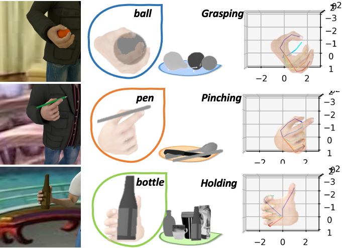

VO-handpose: Variational Object-aware 3D Hand Pose from a Single RGB Image
Project Page of VO-handpose: Variational Object-aware 3D Hand Pose from a Single RGB Image
This work has been accepted in IROS 2019 - jointly presented in IEEE Robotics and Automation Letters
Yafei Gao, Yida Wang, Nassir Navab and Federico Tombari.
Abstract

We propose an approach to estimate the 3D pose of a human hand while grasping objects from a single RGB image. Our approach is based on a probabilistic model implemented with deep architectures, which is used for regressing, respectively, the 2D hand joints heat maps and the 3D hand joints coordinates. We train our networks so to make our approach robust to large object- and self-occlusions, as commonly occurring with the task at hand. Using specialized latent variables, the deep architecture internally infers the category of the grasped object so to enhance the 3D reconstruction, based on the underlying assumption that objects of a similar category, i.e. with similar shape and size, are grasped in a similar way. Moreover, given the scarcity of 3D hand-object manipulation benchmarks with joint annotations, we propose a new annotated synthetic dataset with realistic images, hand masks, joint masks and 3D joints coordinates. Our approach is flexible as it does not require depth information, sensor calibration, data gloves, or finger markers. We quantitatively evaluate it on synthetic datasets achieving stateof-the-art accuracy, as well as qualitatively on real sequences.
Dataset
Despriction
This dataset provides 11020 samples. Each sample provides:
+ RGB image (320x320 pixels);
+ Segmentation mask (320x320 pixels) for hand
+ Segmentation mask (320x320 pixels) for object
+ 21 Keypoints with 2D and 3D coordinates
+ Intrinsic Camera Matrix
It was created with freely accessible character from MakeHuman and rendered with Blender
Download
You can find download.py from here, then run it under your data folder:
python download.py -o ./<DATA FOLDER>/
File structures
After unziping SynGraspHand.zip, you will find our dataset in the following structure:
./ : Root folder
./images : Color images
./mask_hand : Segmentation masks for hand
./mask_object : Segmentation masks for object
./annotations.mat : Key point annotations and camera matrices
Citation
Please consider cite VO-handpose for 3D hand pose estimation if you find it helpful.
@article{gao2019variational,
title={Variational Object-Aware 3-D Hand Pose From a Single RGB Image},
author={Gao, Yafei and Wang, Yida and Falco, Pietro and Navab, Nassir and Tombari, Federico},
journal={IEEE Robotics and Automation Letters},
volume={4},
number={4},
pages={4239--4246},
year={2019},
publisher={IEEE}
}
Contact
Concerning questions regarding to the dataset, please contact Yafei Gao (yafei.gao@gmx.de)